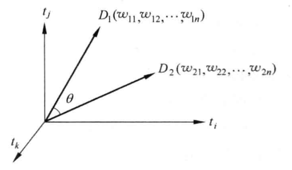
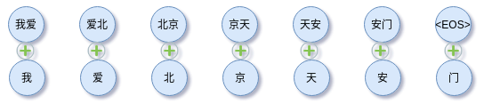

词向量系列（1）：VSM与词袋模型
在没有词向量之前，计算机对文本的理解局限在字符编码（如 ASCII、UTF8），然而这类编码并不是数字，不具备物理意义或数学意义，这意味着不能进行浮点数相关的操作。词向量出现后，计算机突破原有局限，可以进行数值计算，并引入统计学习方法，可以开始“模仿”人类处理文字、语言的能力。
随着 NLP 的发展，词的向量化取得很大的突破，如 word2vec、fastText，百花齐放百家争鸣。当然，本系列的文章并不是对这些模型的罗列，而是依据一定的线索总结词向量研究的思路与演进。根据过去的发展，洞见未来的趋势。作为本系列的开篇，这里先梳理VSM与词袋模型方法。首先我们来了解NLP中关于表示的基本概念。
基本概念
文本表示：文本表示是对人类语言的一种约定或表述，在 NLP 中称为文本的向量化（Embedding）。文本作为非结构化的数据且具有不同的粒度，需要转化为结构化的数据。如词、短语、句子、段落以及篇章作为非结构化数据，为进行分类、匹配甚至更复杂的任务，首先需要转化为向量、矩阵甚至更复杂的结构化数据。最常见的就是词向量，就是使用一个向量来表示（约定）一个词。当然，我们还会问，文本表示用向量就足够了？文本是否可以用矩阵表示？或者其他的数据结构？这个留作后续的思考。文本表示是建立文本数学模型的初步。
上下文：词的相邻词、词的所在句子、词的所在段落、词的所在的文档等等。
分布式假设：分布式假设具有相似上下文（context）的词具有相似的语义。这很好理解，因为语言在统计上遵循一定的语义和语法规则。有了这个假设，我们就可以设计模型训练语言模型，进而获得词的向量化。相关资料可参考 Distributional semantics。
局部表示：局部表示也称为离散表示或符号表示，可以使用 one-hot 向量的形式进行数学化。
语义鸿沟：语义鸿沟问题是指输入数据的底层特征和高层语义信息之间的不一致性和差异性。
相似性和相关性：相似性指语义相似，相关性则是更大的范畴，可以理解为某个context的共同元素。例如，猫和老鼠，尽管并不相似，但是常常出现在同一context下，因此它们是相关的；又比如咖啡杯与咖啡、雪梨和苹果等等。当然，在没有强调的情况下，不用纠结相似性和相关性这两个词的区别，比较自然语言本身具有很大的灵活性。
词向量的分类：单语言或多语言、上下文相关或上下文无关等等。
分布式表示与分散式表示
分布式表示与分散式表示这两个词容易混淆，所以这里强调以下。
分布式表示：分布式表示（Distributional Representation）是基于分布式假设而形成的对词的约定或表述。例如，如果基于分布式假设设计的模型和训练方法而获得的词向量，那么这个词向量是词的分布式表示。此向量的每个维度不具有具体的语义或语法特征，但整个向量则表示一个语义。有相似语义的词在距离上相近。
这里容易让人产生疑问，为什么要让词向量具有分布式表示的特点？其实我们可以从信息论的角度来理解。一个学习过程是有效的，一定是一个让数据从无序变为有序的过程，这个过程让熵变小。一开始语义随机分散到多维空间上，随着学习的有效进行，相似的语义的词会聚集在一个区域内（无序变有序的过程）。
怎么去理解聚集这个过程呢？你可以考虑你正在写一篇文章，遇到某个你不会的词，你需要查字典，如果所有词都随机分散到各页上，那么这个过程是异常困难。为此，你会把相关的词（同一上下问题）放到同一页上，随着使用词汇量的增大，词典慢慢变成具有相似语义的词会放到相邻页码上，最终形成一本高效查询的词典，这个过程就是让熵最小化。因此，分布式表示是让熵最小化的表示。此外，我们还可以粗暴地理解，太阳把能量辐射到地球，地球的熵减少。这一点在语言的表示和人类的认知习惯是很相似的。这下我们也可以理解，为什么大脑也是这样存储和检索信息。
分散式表示：分散式表示（Distributed Representation）将一定粒度的文本分别分散到稠密、低维、连续的空间中。于是，与分布式表示不同，向量的每一维都表示文本的具有某种潜在的语法或语义特征。分散式表示没有分布式假设的约束，这意味着具有相似语义的两个词，其所在的多维空间的位置不一定是相近的。分散式表示可以直接把词ID映射为随机向量，
这样就可以获得低维、稠密的表示。由于是随机向量，那么不同语义会分散到高维空间的不同位置中，并不存在语义相似位置相近的情况。
可能会问，随机向量也行？是的，因为下游的网络可以继续做复杂的映射，但是这也增加模型学习的难度。分散式表示可能更容易理解， 即一个词语的语义分散到语义空间中的不同基向量上。
分布式表示与分散式表示并不是对立的，在我看来，分布式表示是分散式表示的特例。从最小熵的角度来理解，好的分散式表示应该具有分布式表示的特点。分布式表示是分散式表示在熵最小化上的优化。
接下来我们谈谈词和文档的表示。
词的 one-hot 表示
假设词表的大小为$n$对于词汇表中第$i$个单词可表示为
即第$i$位取值为1，其他为0。onehot表示有两个缺点，NLP中尤其是中文，词表往往很大，因此onehot表示的维度也很大。另外，任意两个词的距离都是$\sqrt{2}$，没有区分度。
类似的做法就是把单词编码是独一无二的数字，但本质上是不变的，因为词ID可以表示为，
其中$\text{word}_{i}[j]$表示词向量$\text{word}_{i}$的第$j$个分量。类似地，如果粒度可以是字符级别、短语、句子。为简单起见，下文均使用词作表述。one-hot表示是最原始的，可逆，没有丢失信息。
缺点：
- 词表大，容易导致维度灾难，模型训练异常慢，因为每次只有极小数的参数更新。
- 语义相似问题，无法处理歧义问题，相似性计算。无法准确表达不同词之间的相似度
- 不能处理词序，这是 BOW 的问题
随机映射
给每个词（字）ID分配一个$n$维随机向量作为特征，
可能会有人怀疑，随机向量也能做特征？答案：是的！如果使用它作为特征，只要下游网络做得足够复杂，将原始的表示空间高度扭曲使其具有分布式语义特点。事实上Embedding的本质就是可训练的随机向量，其初始化也是按照给定分布下的随机向量。
补充：参见新文章理解神经网络中Embedding层的原理。
hash方法
one-hot维度太大，从压缩特征来讲，可以用Hash Trick，其思路很简单，就是把词ID映射到更小的区间，从而达到降低维度的目的。例如，最简单的方法如下，
不过，这意味这Hash函数带来的冲突。还有一种比较另类的方法，就是词的 hash 值或取词的位置，用Python来表示，
1 | def hash_features(words, m, n): |
其中hash_func函数可以经过特殊设计，让相似的词有相同的哈希值，不过这个在英文中才常用，如funny和fun。
以上是关于词的表示的若干方法，那么文档的表示呢？
词袋模型
词袋模型，缩写 BOW（bag of words），词在句子或文档中不考虑先后顺序、语法和句法，只要有相同的词集合就是相同的句子或文档。BOW（Bag of Word）假设文档（或句子）由一篮子词组成，词是最小的组成单位，不考虑词序和语法。词袋模型可以看成一种以词为基本单位的向量空间模型（Vector Space Model, VSM）。以下的方法均为基于 BOW 的特征提取方法，都不考虑词序和语法问题。
BOW不考虑词序也行？我们可以举例来体会一下，比如这段经典的句子：
1 | “研表究明，汉字的顺序并不定一能影阅响读，比如当你看完这句话后，才发这现里的字全是都乱的。” |
仔细观察上句，发现局部的无序导致语法上是错误的，但是却不改变人类对其语义上的理解。有些情况下，改变预习获得截然相反的意思，
1 | 叉烧包不太好吃 |
词袋模型并不是复杂的方法，但是却很实用，它解决了把一个变长的文本序列转换为定长的向量的问题。回顾历史，我觉得这是一种简单又智慧的方法。
VSM
向量空间模型，简称 VSM，以下我们一直使用 VSM。VSM的问题在其假设：向量空间模型假设单词和单词之间相互独立，每个单词代表一个独立的语义单元。该假设很难满足现实情况。因为通常来说，现实的文档有如下特点：
- 单词与单词之间并非互相独立，而是存在关联，尤其是单词及其附近的单词
- 文档中存在很多的一词多义和多词同义的现象，单词不能代表一个独立的语义单元
词袋模型和VSM在一定意义上是等价的说法，不过我们这里还是区分对待，VSM是词袋模型的推广。向量空间模型（VSM）和词袋模型（BOW）有什么区别？向量空间模型（VSM）泛指文本向量化的方法，而词袋模型（BOW）则是认为文本是由无序的词组成的，可以认为是实现VSM的方法之一。通过这种方式，VSM 轻易把不定长的文本转化为固定维度的向量，其在空间中的可视化如下，

假设有文档-单词矩阵，
称以上矩阵为文档-单词共现矩阵（document-word co-occurrence matrix）。其中 $w_{ij}$ 为第$i$篇文档依据词汇表顺序第$j$个词的取值。最简单的情况，该取值为布尔权重，只有两个取值，
当文档 $D_{i}$ 中包括词 $word_{j}$ 则 $\omega_{i,j}$ 取 1，否则取 0，这是 VSM 中最基本的方式，构建非结构化的文本到结构化的数学表示建立桥梁，一个变长的文本序列转换为定长的向量。
基于boolean权重的VSM有如下问题或局限：
- 特征维度非常高，特征大小等于词表大小，资源消耗大，词表大容易OOM
- 特征非常稀疏，因为
one-hot编码 - 不具有语义特征，不能够计算相似性
为此可以从以下思路优化：
- VSM 中权重用于衡量某个特征项（字词）在文档中的重要程度。为此，优化文档向量表征的下游应用如分类效果可以从权重的计算切入。
- VSM 在构造文档-单词矩阵时，涉及到词表的构建，这个时候可以引入一定的技巧，比如去掉停用词、标点符号等。
- 这种特征表示方法并没有开来词的频率信息。不难理解，词的出现频率很高或很低至于分类任务来说并不具备有效性。为此引入一定规则的统计方法。
基于频率的统计思路
词的权重由其出现的频率决定，
权重$w_{i,j}$为文档$D_i$中词$word_j$的频次。
不过单纯的频率信息，会把“的”、“地”、“得”等词赋予过大的权重，为此引入IDF来优化。
引入 TF-IDF
TF-IDF核心就是两个：
- TF：文档频率
- IDF：逆文档频率
TF-IDF为，
其中$N$ 为文档总数，$TF(D_{i},word_{j})$ 表示词 $word_{j}$ 在文档 $D_{i}$ 中的频次。$DF(word_{j})$ 表示包括词 $word_{j}$ 的文档中出现的次数，而$\log{\frac{N}{DF(word_{j})}}$称为逆文档频次，对于仅出现在一个或两个文档中的单词更像噪声而非有用信息，因此给予更低的权重。为避免数值问题，可以通过加一平滑技巧，
这样可以避免OOV外的词$DF(word_{j}) = 0$出现数值计算问题。IDF的引入避免了“的”、“地”、“得”等词赋予过大的权重。IDF值一般都是通过大量语料统计获得，再应用时通过查字典的方式获得给定词的IDF值。
因此文档-单词共现矩阵（document-word co-occurrence matrix）的权重可以是：
- boolean
- TF
- IDF
- TF-IDF
这样获得的矩阵$D$有两个问题：矩阵维度非常大，矩阵的每一行都表示一个文档的向量化表征，但是维度非常大。可以选择矩阵降维（即引入主题模型）或者缩减词汇表如去掉停用词。
实践中，可以尝试不同粒度的分词或ngrams获得的文档表征进行拼接，以获得更丰富的表征。
n-grams
n-grams，即n元语法。n-gram（n 元语法） 的基本想法是把最小单位的粒度扩大到由 n 个单元组成。以二元为例：
猴子 子吃 吃了 了苹 苹果
在直观点，2-gram情况与原来单字的对比，

BOW 的特征构造方式导致两个句子的向量是一样的，比如下面两个句子，
猴子吃了苹果
苹果吃了猴子
显然，不考虑词序的 BOW 以词作为最小单位是有很多问题。例如考虑语义的情况，相同的词语，由于忽略对词语义、词序信息的情况，不同语序构造出的句子有截然不同的意思。
集合中每一项都是由二个相邻的字组成的的子串,长度为 2。像“了苹”这样的单元没有意义，但是在某些任务中却能提供关键的信息，例如通过这些信息能够还原正确的语序。n-grams可以看做是规则的分词，可能引入噪声，也引入序列位置信息，甚至可以引入更高级的特征。
于是，n-grams可以结合VSM构建文档与词的共现矩阵，提高文档表征的准确性。在统计n-grams时，可能某些segment并不存在于语料中，进而无法统计，这种情况可以引入平滑技巧，
随着 N 的增加，可以抽取的特征就会越多，特征空间也会呈指数增加。这些高阶的特征出现的频率也会相对较低，对分类不但没有太多帮助，还会直接影响着后续处理的效率与复杂度。因此在一般的文本分类任务中，N 取 3 就足够了，并且同时也使用一元和二元特征，防止出现过拟合。
点互信息与词-词共现矩阵
以上我们谈的是文档-单词共现矩阵，事实上，共现矩阵（co-occurrence matrix）有两种，一种是词与词的共现矩阵（word-word matrix）通常用在信息检索中，如文档的相似匹配。另外一种的文档与词的共现矩阵（document-word matrix）通常用于构建词向量（Embedding）。下面我们谈谈词与词的共现矩阵。
度量两个词的共现，PMI（Pointwise mutual information，点互信息）是常用的方法，
它能够量化词$x$与词$y$是否强相关。实践中常常要求非负，于是有PPMI（Positive PMI），
换成词（word）-上下文（context）形式，
$w,c$都是词表V中的词，因此遍历所有词，就可以构成PPMI矩阵，是词-词共现矩阵的一种。PPMI会给低频词一个很大的权重，因此添加一个缩放因子，
其中，
这里取$0 \lt \alpha \lt 1$，起到缩小频率大小的差距。
假设有单词-上下文矩阵（word-word co-occurrence matrix）为，
其中$m = |w|, n = |c|$分别为词汇表大小、上下文词数量。$f_{i,j}$为词$i$与上下文$j$的共现频次，通常是在个固定大小的窗口内统计。
根据单词-上下文矩阵，有$p(w, c)$的估计，
$p(w)$的估计，
$p(c)$的估计，
于是，
当然也可以把缩放因子纳入考虑。
基于PPMI构建的共现矩阵本身也是稀疏的，因此可以通过矩阵降维或矩阵分解方法来解决。
词向量评估之相似度计算
有了这些向量，可以做很多事情，如度量计算，通俗来说就是计算文档的相似性。通常有如下的词类比，
1 | king - man = queen - woman |
又如A之于B，相当于X之于什么？
1 | A->B，as X->Y，Y是什么？ |
也就是这种形式的对应，
这种词类比的解法可以直接通过向量相似的方法即可解决，
或者找
最近的词向量对应的词。
上式是很简单的向量运算的推导结果，这里不展开。其次词向量评估可以通过t-SNE、PCA等可视化，通过人工检验其质量。
总结
本文介绍了一下词向量化的基本概念，包括分布式表示与分散式表示。然后介绍两种共现矩阵（co-occurrence matrix）：
- 文档与词的共现矩阵
- 词与词的共现矩阵
基于这两种矩阵获得文档或词的量化化表征。
参考文献
[1] https://scikit-learn.org/stable/modules/classes.html#module-sklearn.feature_extraction.text
[2] https://zhuanlan.zhihu.com/p/22386230
[3] How to Generate a Good Word Embedding?
[4] Linguistic items with similar distributions have similar meanings
[5] 统计自然语言处理
[6] https://en.wikipedia.org/wiki/Feature_hashing
[7] https://scikit-learn.org/stable/modules/feature_extraction.html#feature-hashing
[8] https://en.wikipedia.org/wiki/Distributional_semantics
[9] https://en.wikipedia.org/wiki/Semantic_similarity
[10] 数学之美
[11] https://www.cs.princeton.edu/courses/archive/fall16/cos402/lectures/402-lec10.pdf
[12] Evaluation methods for unsupervised word embeddings
转载请包括本文地址：https://allenwind.github.io/blog/8233
更多文章请参考：https://allenwind.github.io/blog/archives/